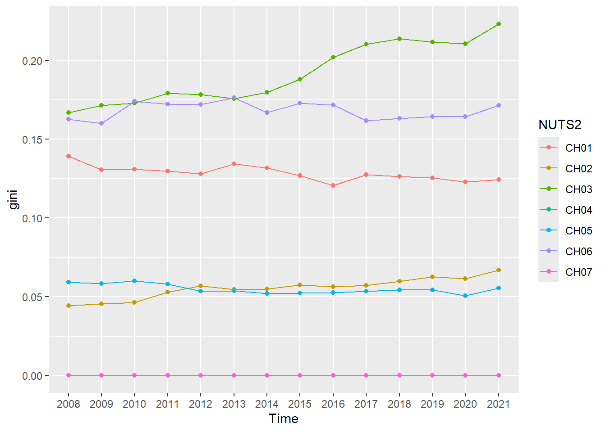
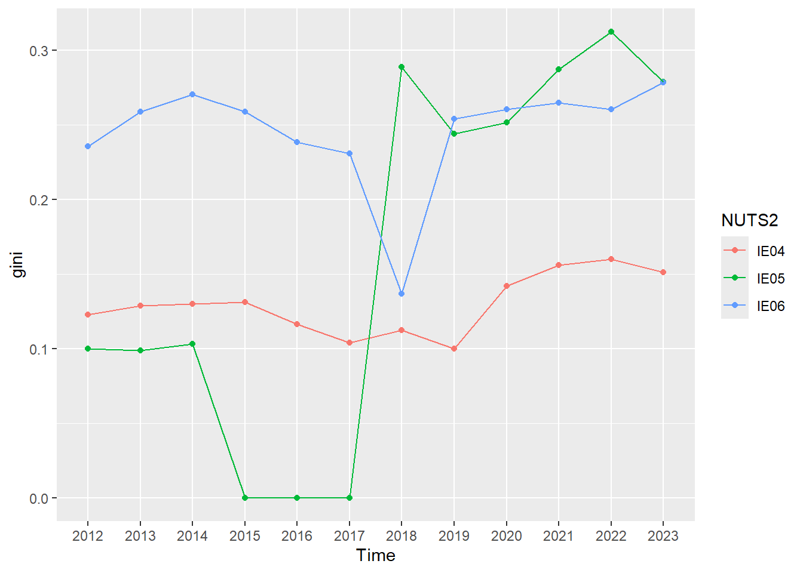
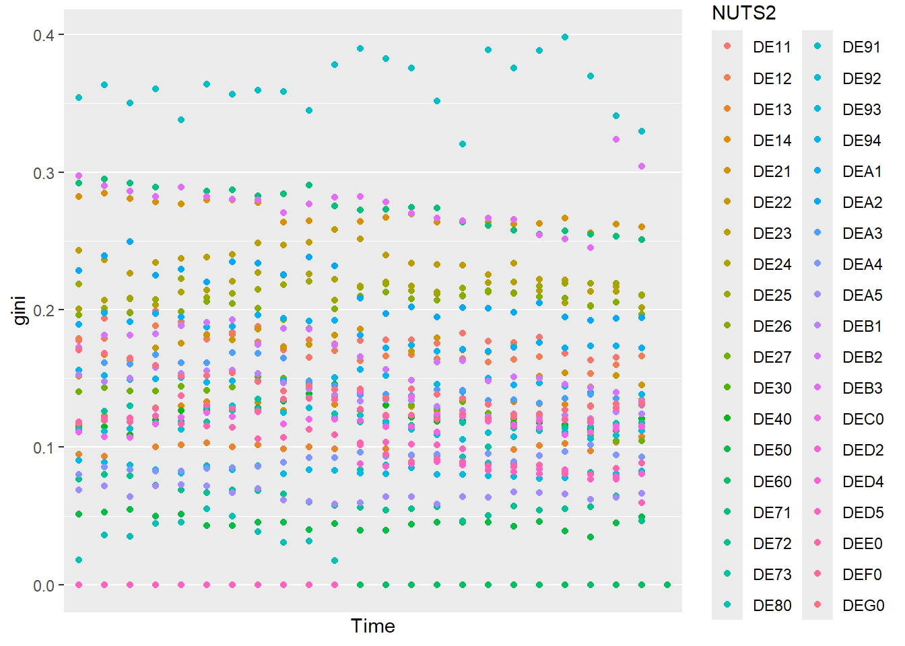
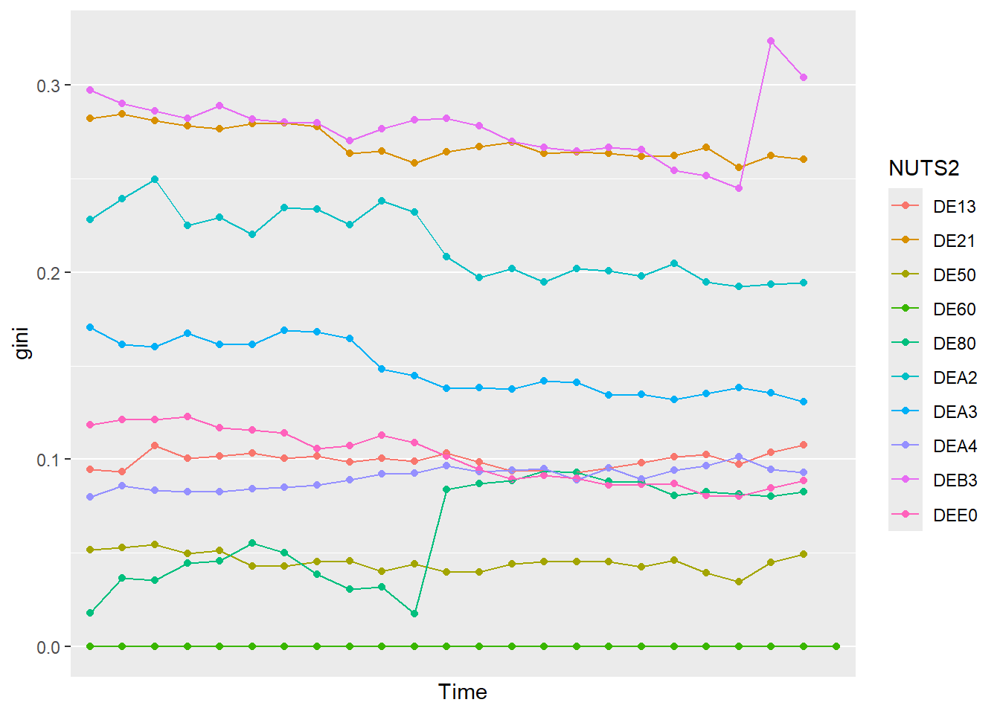
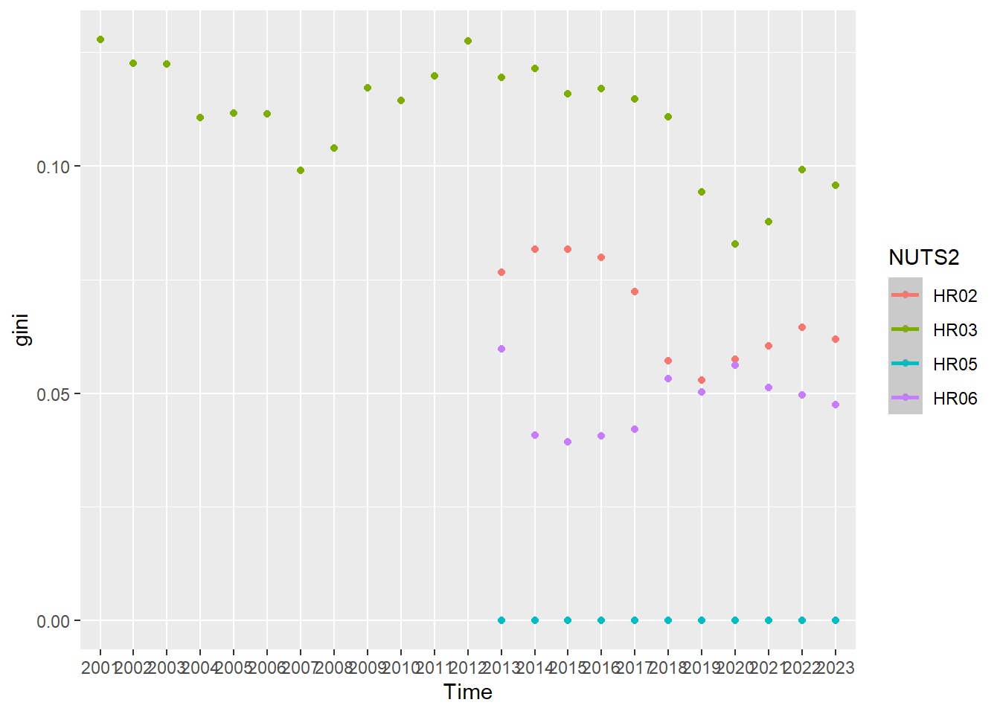

Attaching package: 'psych'
The following objects are masked from 'package:ggplot2':
%+%, alpha
Data Acquisition
In this assignment we will use four countries data from Eurostat to process it and analyse the sub-national GDP (gross domestic product) and population data from the years 2000-2023. Eurostat serves as the statistical office of the European Union, and their work is to collect and provide statistics on EU countries, through reliable, impartial and comparable data These countries are Germany, Switzerland, Croatia and Ireland. In these datasets we encountered missing values which we decided to keep. These NA, or missing data came from different reason from each country.
Germany which has the most observations, lacks data for GDP from the time 2023 in a lot of its regions. This can be because of late reporting of its data to Eurostat. There are also some missing data on population during 2000-2010 and a few other regions during 2000-2023 which may be the emergence of new regions or change in their districts that require their own data.
Ireland lacks data from the early 2000 to 2011 in population due to changes in NUTS 3 level in their regions. When it comes to the GDP, Ireland only misses data from 2015-2017 in Mid-West and South-West. This was due to confidentiality concerns.
Croatia only have NA values on population but its spread by different regions, as it lacks all data from 2000 and some lacks from 2000-2012 and from 2021-2023. Same as Germany, here the lack of data can be explained by the changes in regions and districts, which may be the cause of the spread in NA values. It has also been shown that the NUTS2 regions have change from 2007 to 2021.
Switzerland is a EFTA country, and have not had a data-sharing agreement with Eurostat for NUTS3 GDP from 2000-2007, while in the 2008 the NUTS classification was updated and it was standardized across all regions. Switzerland also lacks the data from 2022-2023 which may be they are waiting to finalize the data before releasing it.
We will then calculate the GDP per capita and explore regional inequality through a EDA (exploratory data analysis).
GDP per Region
#Removing the metadata from the top and bottom by defining the range.raw_econ <-read_excel("./Data/GDP_noFlag.xlsx", sheet ="Sheet 1", range ="A8:Y464", col_types ="text")#Dropping the first row to align time with years raw_econ <- raw_econ[-1,]names(raw_econ)[1] <-"Geo_Labels"print(raw_econ)
# Making raw_econ into long format.tidy_econ <-pivot_longer(data = raw_econ,cols =-Geo_Labels,names_to ="Time",values_to ="GDP Million EUR")
Demographic Data
#Removing the metadata from the top.raw_demo <-read_excel("./Data/demo_noFlag.xlsx", sheet ="Sheet 1", range ="A10:Z487", col_types ="text")
New names:
• `TIME` -> `TIME...1`
• `TIME` -> `TIME...2`
#Dropping the first row to align time with years raw_demo <- raw_demo[-1,]names(raw_demo)[1] <-"Geo_Codes"names(raw_demo)[2] <-"Geo_Labels"print(raw_demo)
# Making raw_demo into long format.tidy_demo <-pivot_longer(data = raw_demo,cols =c(-Geo_Codes, -Geo_Labels),names_to ="Time",values_to ="Population")
GDP Per capita:
# Joining the two datasetstidyjoined <-left_join(tidy_demo, tidy_econ, by =join_by(Geo_Labels, Time), keep =FALSE)# Mutating to add column for GDP per capita. tidyjoined <- tidyjoined %>%mutate(`GDP Million EUR`=as.numeric(`GDP Million EUR`),Population =as.numeric(Population),GDP_Capita = (`GDP Million EUR`*1000000) / Population )
Warning: There were 2 warnings in `mutate()`.
The first warning was:
ℹ In argument: `GDP Million EUR = as.numeric(`GDP Million EUR`)`.
Caused by warning:
! NAs introduced by coercion
ℹ Run `dplyr::last_dplyr_warnings()` to see the 1 remaining warning.
# A tibble: 15 × 8
Geo_Codes NUTS2 Country Geo_Labels Time Population `GDP Million EUR`
<chr> <chr> <chr> <chr> <chr> <dbl> <dbl>
1 DE111 DE11 DE Stuttgart, Stadtk… 2000 582443 35274.
2 DE111 DE11 DE Stuttgart, Stadtk… 2001 583874 38409.
3 DE111 DE11 DE Stuttgart, Stadtk… 2002 587152 39723.
4 DE111 DE11 DE Stuttgart, Stadtk… 2003 588477 41116.
5 DE111 DE11 DE Stuttgart, Stadtk… 2004 589161 40680.
6 DE111 DE11 DE Stuttgart, Stadtk… 2005 590657 39624.
7 DE111 DE11 DE Stuttgart, Stadtk… 2006 592569 42668.
8 DE111 DE11 DE Stuttgart, Stadtk… 2007 593923 44533.
9 DE111 DE11 DE Stuttgart, Stadtk… 2008 597176 42082.
10 DE111 DE11 DE Stuttgart, Stadtk… 2009 600068 38337.
11 DE111 DE11 DE Stuttgart, Stadtk… 2010 601646 42599.
12 DE111 DE11 DE Stuttgart, Stadtk… 2011 583868 44957.
13 DE111 DE11 DE Stuttgart, Stadtk… 2012 591015 46579.
14 DE111 DE11 DE Stuttgart, Stadtk… 2013 597939 47017.
15 DE111 DE11 DE Stuttgart, Stadtk… 2014 604297 48562.
# ℹ 1 more variable: GDP_Capita <dbl>
# Descriptive Analysis grouped by country codedescribeBy( tidyjoined, tidyjoined$Country)
Descriptive statistics by group
group: CH
vars n mean sd median trimmed mad
Geo_Codes 1 624 13.50 7.51 13.50 13.50 9.64
NUTS2 2 624 4.00 1.86 5.00 4.08 1.48
Country 3 624 1.00 0.00 1.00 1.00 0.00
Geo_Labels 4 624 249.35 162.82 273.00 252.42 209.79
Time 5 624 12.50 6.93 12.50 12.50 8.90
Population 6 624 305461.88 319131.49 214911.50 242215.72 215700.51
GDP Million EUR 7 364 21507.00 25817.17 14450.17 16282.75 16671.43
GDP_Capita 8 364 65662.47 26094.69 59181.38 61016.74 13876.25
min max range skew kurtosis se
Geo_Codes 1.00 26.0 25.0 0.00 -1.21 0.30
NUTS2 1.00 7.0 6.0 -0.25 -1.37 0.07
Country 1.00 1.0 0.0 NaN NaN 0.00
Geo_Labels 1.00 474.0 473.0 -0.18 -1.49 6.52
Time 1.00 24.0 23.0 0.00 -1.21 0.28
Population 14946.00 1579967.0 1565021.0 1.88 3.55 12775.48
GDP Million EUR 526.26 140799.6 140273.4 2.56 7.58 1353.19
GDP_Capita 30506.73 187233.7 156727.0 2.24 5.70 1367.73
------------------------------------------------------------
group: DE
vars n mean sd median trimmed mad
Geo_Codes 1 9768 230.00 117.50 230.00 230.00 151.23
NUTS2 2 9768 26.54 11.78 27.00 26.43 16.31
Country 3 9768 2.00 0.00 2.00 2.00 0.00
Geo_Labels 4 9768 233.76 135.21 233.00 232.99 171.98
Time 5 9768 12.50 6.92 12.50 12.50 8.90
Population 6 9331 203245.16 235682.57 146751.00 166898.85 80591.17
GDP Million EUR 7 9202 7022.39 11430.89 4243.68 4979.97 2878.05
GDP_Capita 8 8765 32287.57 15350.99 28584.35 29874.51 10166.43
min max range skew kurtosis se
Geo_Codes 27.00 433.0 406.0 0.00 -1.20 1.19
NUTS2 8.00 45.0 37.0 0.04 -1.30 0.12
Country 2.00 2.0 0.0 NaN NaN 0.00
Geo_Labels 2.00 476.0 474.0 0.03 -1.18 1.37
Time 1.00 24.0 23.0 0.00 -1.20 0.07
Population 33264.00 3677472.0 3644208.0 8.35 100.64 2439.85
GDP Million EUR 806.67 197516.7 196710.0 7.35 72.01 119.16
GDP_Capita 10984.41 199296.2 188311.8 2.58 11.81 163.97
------------------------------------------------------------
group: HR
vars n mean sd median trimmed mad
Geo_Codes 1 840 451.00 10.11 451.00 451.00 13.34
NUTS2 2 840 47.66 1.26 48.00 47.57 1.48
Country 3 840 3.00 0.00 3.00 3.00 0.00
Geo_Labels 4 840 279.03 135.22 300.00 284.21 169.02
Time 5 840 12.50 6.93 12.50 12.50 8.90
Population 6 595 198678.28 163448.17 141186.00 164221.88 52927.34
GDP Million EUR 7 504 2166.74 3226.54 1146.18 1459.15 727.21
GDP_Capita 8 315 10596.37 4177.19 9365.78 10035.89 2752.18
min max range skew kurtosis se
Geo_Codes 434.00 468.00 34.00 0.00 -1.21 0.35
NUTS2 46.00 50.00 4.00 0.41 -0.59 0.04
Country 3.00 3.00 0.00 NaN NaN 0.00
Geo_Labels 44.00 471.00 427.00 -0.18 -1.20 4.67
Time 1.00 24.00 23.00 0.00 -1.21 0.24
Population 42469.00 809235.00 766766.00 2.46 5.96 6700.72
GDP Million EUR 237.32 25658.09 25420.77 4.08 18.25 143.72
GDP_Capita 4141.43 33381.85 29240.42 1.75 4.54 235.36
------------------------------------------------------------
group: IE
vars n mean sd median trimmed mad
Geo_Codes 1 192 472.50 2.30 472.50 472.50 2.97
NUTS2 2 192 52.12 0.78 52.00 52.16 1.48
Country 3 192 4.00 0.00 4.00 4.00 0.00
Geo_Labels 4 192 266.88 134.78 254.50 270.30 200.15
Time 5 192 12.50 6.94 12.50 12.50 8.90
Population 6 96 607720.80 318232.23 472295.50 552867.55 169040.12
GDP Million EUR 7 185 30186.15 42352.46 13769.34 19981.87 9581.30
GDP_Capita 8 89 51718.66 41164.89 35327.62 43961.75 16962.68
min max range skew kurtosis se
Geo_Codes 469.00 476.0 7 0.00 -1.26 0.17
NUTS2 51.00 53.0 2 -0.22 -1.35 0.06
Country 4.00 4.0 0 NaN NaN 0.00
Geo_Labels 51.00 455.0 404 -0.28 -1.14 9.73
Time 1.00 24.0 23 0.00 -1.22 0.50
Population 286326.00 1499179.0 1212853 1.55 1.36 32479.44
GDP Million EUR 3765.33 248326.3 244561 2.83 8.57 3113.81
GDP_Capita 16456.08 193838.1 177382 1.73 2.03 4363.47
#NA for all countriessum(is.na(tidyjoined))
[1] 3838
# Simple statistics for all countries combinedsummary(tidyjoined)
Geo_Codes NUTS2 Country Geo_Labels
Length:11424 Length:11424 Length:11424 Length:11424
Class :character Class :character Class :character Class :character
Mode :character Mode :character Mode :character Mode :character
Time Population GDP Million EUR GDP_Capita
Length:11424 Min. : 14946 Min. : 237.3 Min. : 4141
Class :character 1st Qu.: 105932 1st Qu.: 2544.7 1st Qu.: 22243
Mode :character Median : 150867 Median : 4220.9 Median : 28681
Mean : 212629 Mean : 7715.8 Mean : 33027
3rd Qu.: 247409 3rd Qu.: 7596.0 3rd Qu.: 38111
Max. :3677472 Max. :248326.3 Max. :199296
NA's :778 NA's :1169 NA's :1891
Regional GDP inequality - Using light levels as a predictor of economic development
In this assignment we use reported GDP and demographic data from Eurostat to determine regional inequality in a selection of countries, but what can you do when regional income data isn’t readily available? The paper “Regional inequality, convergence, and its determinants – A view from outer space” by Christian Lessmann and André Seidel aimed to find a new way of finding regional inequalities in areas without economic data – estimating regional income using satellite images of nighttime light intensity.
Their method involved using luminosity data taken from meteorological satellites from the U.S air force, and existing income data to estimate a relationship between the two variables. They then used this estimate to predict regional income for other regions where economic data was not available, and to calculate inequality indicators such as the Gini coefficient. The main takeaway from the study would be that yes – it is possible to use light as an indicator of GDP. Findings also showed that for about 70% of countries, regional gaps got smaller, while other countries saw inequality grow. They also discovered an “n-shaped” link between development and regional inequality: in early stages of growth inequality is low, for mid-income regions it rises, before it falls again in rich economies.
Regional GDP inequality - Calculating the Gini coefficient
To calculate the Gini coefficient for our selected countries (weighted for population) we first insert our data including GDP per capita into a new function we have called “ginigdp”. To be able to calculate the Gini coefficient, we then have to remove NA-values from our dataset. This can be done by using the “na.omit”-function. The output is then grouped by year (variable “Time”) and region (NUTS2), and sent to a summarise-function which includes our Gini calculation (done by the “gini.wtd”-function). We have also included a count-column that shows the amount of NUTS3-regions in each of the NUTS2-regions. This is to provide clarity in case we get “strange” Gini-values like 0, which we would represent ultimate equality. We will get this in all cases where there is only one NUTS3-region per NUTS2-region. The code chunk below does all this and prints the first 10 results.
In the sectiions below, we will use the newly created “ginigdp”-function where all our gini-coefficients have been stored. To do this, we first filter down to the specific country, before we send the data to ggplot, group it by NUTS2-region and visualize using geom_point and geom_line graphs.
Switzerland
#Gini Switzerland#Plot for Switzerland ginigdp %>%filter(startsWith(NUTS2, "CH")) %>%ggplot(mapping =aes(x = Time, y = gini, colour = NUTS2, group = NUTS2)) +geom_point(mapping =aes()) +geom_line() +labs(x ="Year", y ="Gini-Coefficient", title ="Regional GDP Inequity in Switzerland", subtitle ="By NUTS2-region")

The Swiss graph shows low Gini-coefficients for each region, with a tendency to stay below 0.20. There is seemingly a divide into two groups one of which has a higher gini-coefficient than the other. While the overall inequality seems to remain low and consistent, we do see a divergence from the rest by CH03 who has seen growing regional inequality the last 10+ years. This seems to be because CH031 Basel-Stadt has a much higher GDP per capita than the surrounding areas. CH07 stays at 0 for the whole period due to only having one region. ### Ireland
#Gini Irelandginigdp %>%filter(startsWith(NUTS2, "IE")) %>%ggplot(mapping =aes(x = Time, y = gini, colour = NUTS2, group = NUTS2, )) +geom_point(mapping =aes()) +geom_line() +labs(x ="Year", y ="Gini-Coefficient", title ="Regional GDP Inequity in Ireland", subtitle ="By NUTS2-region")

The irish graph shows a bigger spread and more “movement” than the swiss graph. We only have population data from 2012 onwards, hence our starting point. As we can see in the graph, IE05 and IE4 start out with similarly low Gini coefficients, both lying around 0.1, whereas IE06, containing the capital Dublin, has a much less even distribution of GDP per capita. For the period 2015-2017 no GDP data was reported for the Mid-West and South-West NUTS3-regions, leaving only one NUTS3-region remaining in the IE05 group, giving us a Gini coefficient of 0,0 for those years. When GDP data returned in 2018, IE053 (South-West) had grown in GDP per capita in a big way, pulling away from the rest of the group and increasing the Gini coefficient. The graph seems to show a trend towards slowly growing regional inequality of development in Ireland.
Germany
#Gini Germanyginigdp %>%filter(startsWith(NUTS2, "DE")) %>%ggplot(mapping =aes(x = Time, y = gini, colour = NUTS2, group = NUTS2)) +geom_point(mapping =aes()) +geom_line() +theme(axis.text.x =element_text(angle =45)) +labs(x ="Year", y ="Gini-Coefficient", title ="Regional GDP Inequity in Germany", subtitle ="By NUTS2-region - full graph")

Germany has been very consistent at reporting data, but as the graph shows, it gives a lot of information. Germany consists of up to 38 NUTS2 regions which gives a spread from 0 to 0.4 in gini-coefficient. It is hard to follow which region goes where in the graph, so we have chosen to extract 10 random regions to get a better picture of Germany’s regional inequalities.
# Picking out 10 different regions for Germany# Set.seed to not get random every time one runes the codesset.seed(123) ginigdp %>%filter(startsWith(NUTS2, "DE")) %>%group_by(NUTS2) %>%summarise() %>%sample_n(10) %>%pull(NUTS2) -> sampled_regionsginigdp %>%filter(NUTS2 %in% sampled_regions) %>%ggplot(mapping =aes(x = Time, y = gini, colour = NUTS2, group = NUTS2)) +geom_point() +geom_line() +theme(axis.text.x =element_text(angle =45)) +labs(x ="Year", y ="Gini-Coefficient", title ="Regional GDP Inequity in Germany", subtitle ="By NUTS2-region - randomly selected.")

This graph takes 10 different regions and shows the same spread as the one with all regions. The gini-coefficient is relatively low inequalities but there is a different between the regions. The graph with all regions from Germany shows one region which is up to a 0.4 while most is between 0.1 to 0.2. One region with the code DE80 stands out as it shows a jump. It could mean a change in the region such as a merger or a change in how they report data.
Croatia
#Gini Croatiaginigdp %>%filter(startsWith(NUTS2, "HR")) %>%ggplot(mapping =aes(x = Time, y = gini, colour = NUTS2, group = NUTS2)) +geom_point(mapping =aes()) +geom_line() +theme(axis.text.x =element_text(angle =45)) +labs(x ="Year", y ="Gini-Coefficient", title ="Regional GDP Inequity in Croatia", subtitle ="By NUTS2-region.")

The graph of Croatia shows us a different picture from the other countries. Demographic data is missing for all regions but HR03 before 2013, hence the early start for HR03. Croatia have had its NUTS region change in different time periods during 2000 to 2023. This change has affected the collection of data, which is then shown here in the graph. The graph also shows a different between the regions in HR03 and the rest, which can be a cause of different economic development and investments choices.
Each graph has a NUTS2 code which gives them a 0 in gini-coefficient through the years. Each code also is just one NUTS3 code in each land, which may be why when we calculate the gini-coefficient, we get a 0.
The use of AI
In this assignments there was used AI to confirm through controlling questions and constructive judging the text and the codes used, to provide a constructive feedback. The AI was used as a sparring partner to help with the wording of the writing and testing of the codes to provide an explanation of how each function in the code works. The software of AI we used was ChatGPT and the model was 3.5 which is the free version. This is a quick and basic model, which means that the text produced by this type of model must be checked. It was only used to check the functioning of our codes and recommend spellings of text.